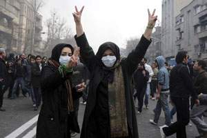

|
|
|
Browsing
Contact Us |
Campaigners |
Face to Face |
Tribune |
Interview |
News |
On the Web |
One Million |
Report
Farsi | Français | German | Italian | Spanish | العربية Also in this section
|
 Iran Threatened by Female ActivistsMonday 18 January 2010 View online : The National Iranian security forces recently beat and arrested some 30 “mourning mothers” holding a peaceful weekly vigil in a Tehran park to demand news of their sons and daughters who had been killed, disappeared or detained in the unrest following June’s disputed presidential election. The shocking scene encapsulated an acute quandary for the regime. It has a tight grip on the levers of repression – but one of the most potent threats it faces comes from unarmed women protesting peacefully. The authorities feared female activism long before the President Mahmoud Ahmadinejad’s re-election, viewing women’s demands for equal rights as inseparable from a wider drive for greater democracy. “If the regime accepts the principle that women have equal rights, it has to revise and re-think its entire ideology, which is based on the pre-modern interpretation of Islamic law,” Ziba Mir-Hosseini, a senior research associate and legal anthropologist at London’s School of Oriental and African Studies, said. As a social movement, women’s groups have been the most organised and vibrant movement in Iran for at least five years. The regime fears their proven ability – as it does that of university student movements – to galvanise and appeal to the country’s youth with a nationwide network of activists. “They [the authorities] are worried that mobilisation on the basis of gender issues … may generate political alliances that end up going beyond women’s rights and challenge the structure of the Islamic Republic in terms of unequal treatment of citizens in general,” said Farideh Farhi, a renowned Iran scholar at the University of Hawaii. That is precisely what happened after Mr Ahmadinejad’s election. The women’s movement and the opposition are now inextricably enmeshed. Anti-regime solidarity on the gender issue dealt the Iranian government an embarrassing setback last month. State-media claimed that a prominent student activist, Majid Tavakoli, had dressed as a woman to escape arrest after delivering a diatribe against the regime during demonstrations on National Student Day. The regime derided the activist, who had previously been jailed for 15 months, as a coward denying his manhood. But male opposition supporters wittily subverted the regime’s gender prejudices by posting photographs on Facebook of themselves sporting Islamic headscarves. Their “be a man campaign” was designed to show both solidarity with a hero of the student movement and with Iran’s women, who are obliged by the authorities to wear the hijab in public. The wives of prominent political prisoners have, meanwhile, posted loving open letters on the internet to their menfolk, while urging the regime to release them. Vindictively, in a bid to silence prominent dissidents, the regime has arrested female members of reformist families, who often are uninvolved in politics. The authorities recently detained the sister of Shirin Ebadi, Iran’s Nobel peace laureate who has been abroad since the June election, speaking out against the regime’s human rights abuses. The regime’s clampdown on female protesters has generated highly damaging publicity. The harrowing, on-camera dying moments of Neda Afgha Soltan, 26, a philosophy student shot dead by a basij militiaman during a peaceful demonstration, made her a worldwide symbol of the opposition movement. “Their very visible crackdown against women has been immensely counter-productive. As one activist said to me, ‘even when we demonstrated against the Shah we never saw women being beaten in the face’,” said Ali Ansari, a professor of Iranian history at St Andrews University in Scotland. The violent repression of women protesters is further de-legitimising the regime and straining the loyalty of security forces. It leaves the authorities “open to questioning on the part of the supporters of the government who have traditionally seen themselves and the Islamic Republic as the ‘protectors’ of women and their ‘motherly virtues’,” Ms Farhi said in an interview. Hadi Ghaemi, the Iranian-born director of the International Campaign for Human Rights in Iran, a New York and Netherlands-based NGO, said the regime believes that “by detaining and prosecuting the women’s rights activists it will prevent a larger number of women coming to the streets – which is the [government’s] real nightmare”. He added: “I’ve seen what are claimed to be tough memos from within the intelligence services talking about one of their priorities being keeping women out of the demonstrations.” Haleh Esfandiari has personal experience of the regime’s paranoia about Iran’s women activists. The Iranian-born US academic and grandmother spent 105 days in solitary confinement in Tehran’s notorious Evin prison in 2007. Her interrogators were “alarmed and “befuddled” by Iran’s women’s rights movement. But, she wrote, they also “told me they feared a backlash if they used excessive force to disperse female demonstrators”. That was three years ago. “Now the gloves are off,” said Ms Esfandiari. The clampdown, however, is failing. Women have been on the front-line of recent protests, braving beatings, injury, arrest and worse. The regime has not learnt from experience. Repression failed to crush the most prominent women’s organisation, the “One Million Signatures Campaign”, a four-year-old grassroots movement that is collecting a million signatures for a petition pressing for legal reforms that would end discrimination against women. While the 1979 Islamic revolution curbed their legal rights, it encouraged their education. Women now outnumber men at universities, and are highly visible in the workforce as well in social and cultural circles. Ironically, many women activists in jail come from pro-regime and conservative families, Mr Ghaemi said. “These young women are very much in opposition to their own parents’ way of thinking.” |